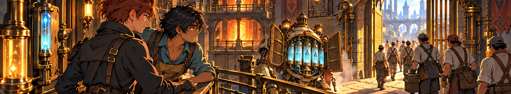

THE UNFINISHED SONG
ASH &
AETHER
CLAY AND WATER
The city burns its memories.
The water remembers yours.
Seven lives. One unfinished song.
5.42 · Surface and shadow
THE WORLD REMEMBERS01 / 04

CLAY AND WATER
The city burns its memories.
The water remembers yours.
Seven lives. One unfinished song.
5.42 · Surface and shadow